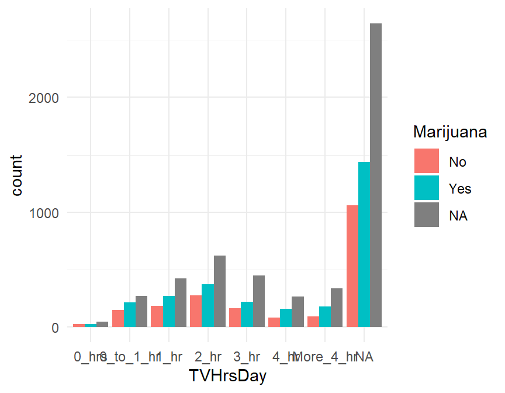

Motivation: Realize the Dream!
Figures are a crucial tool for exploring your data and communicating what you learn from the data.
Whether you are doing a quick check to assess basic features of a dataset or creating a key figure for an important presentation, the best practice is to work thoughtfully. You already learned about creating graphics by I.C.E.E:
The I.C.E.E. method:
- Imagine how you want your graph to look, before you
- Code. Once you have the basic starting point,
- Evaluate your work, and
- Elaborate (refine it).
Repeat until the figure is as awesome as it needs to be.
What’s the missing piece that we left for last? That’s right: the code. Not most important, but crucial.
Learning Objectives
This tutorial will give you tools to:
- Create an appropriate visualization for the data you have and the question you are trying to answer.
- Graph data with integrity, avoiding misleading design choices
- Tell the right story, including elements that emphasize your main finding and make your figure easy to interpret at a glance
But specifically, you will now focus on implementation – you have a plan in mind; now how can you do it in R?
This tutorial provides a set of code examples and practice exercises, but leaves out the details of design already covered in previous tutorials. Here, the assumption is you know what you want, and just need the technique to create it.
You are welcome to treat this tutorial like a reference manual: it’s more important that you know how to look stuff up here than that you spend lots of time on every topic, and you don’t need to memorize. Complete the first 4 sections if you are new to ggformula, and then refer to the others as needed and as time allows. Get used to using this site as a “manual” to look stuff up on demand.
(Sorry about the long table of contents - I don’t have a way to nest two list levels to shorten it, but still make it easy to look up specific plot types!)
ggformula strategy
Two important questions
To get R (or any software) to create the above plot (or do anything else, really), there are two important questions you must be able to answer. Before continuing, see if you can figure out what they are.
The Questions
To get R (or any software) to create the plot, there are two important questions you must be able to answer:
1. What do you want the computer to do?
2. What must the computer know in order to do that?
Answers to the questions
To make the scatter plot you saw before, the answers to our questions are
1. What do you want the computer to do?
A. Make a scatter plot (i.e., a plot consisting of points)
2. What must the computer know in order to do that?
A. The data used for the plot:
- The variable to be plotted along the \(y\) axis.
- The variable to be plotted along the \(x\) axis.
- The data set that contains the variables.
We just need to learn how to tell R these answers.
Graphics with Formulas
The Formula Template
We will provide answers to our two questions by filling in the boxes of this important template:
goal ( yyy ~ xxx , data = mydata )
We just need to identify which portions of our answers go into which boxes.
The Name of the Game
It is useful to provide names for the boxes:
goal ( y ~ x , data = mydata , …)
These names can help us remember which things go where. (The ... indicates that there are some additional input arguments we will add eventually.)
Other versions
Sometimes we will add or subtract a bit from our formula. Here are some other forms we will eventually see.
# simpler version
goal( ~ x, data = mydata )
# fancier version
goal( y ~ x | z , data = mydata )
# unified version
goal( formula , data = mydata ) 2 Questions and the Formula Template
goal ( y ~ x , data = mydata )
Q. What do you want R to do? A. goal
- Your answer to this question determines the function to use.
- For a plot, the function will describe what sorts of marks to draw (points, in our example).
Q. What must R know to do that? A. arguments
- Your answer to this question determines the inputs to the function.
- For a plot, we must identify the variables and the data frame that contains them.
Assembling the pieces
Template
goal ( y ~ x , data = mydata )
Pieces
| box | fill in with | purpose |
|---|---|---|
goal
|
gf_point
|
plot some points |
y
|
births
|
y-axis variable |
x
|
date
|
x-axis variable |
mydata
|
Births1978
|
name of data set |
Your Turn
Put each piece in its place in the template below and then run the code to create the plot.
goal(y ~ x, data = mydata)If you get an “object not found” or “could not find function” error message, that indicates that you have not correctly filled in one of the four boxes from the template.
Note: R is case sensitive, so watch your capitalization.
For reference, here are the first three rows of Births1978.
Using formulas to describe plots
The tilde (wiggle)
The most distinctive feature of ggformula plots is the use of formulas to describe the positional information of a plot. Formulas in R always involve the tilde character, which is easy to overlook. It looks like this:
~
Make sure you know where the tilde is located on your computer’s keyboard! It is often near the upper left-hand corner on American keyboards.

Formula shapes
Most gf_ functions take a formula that describes the positional attributes of the plot. Using one of these functions with no arguments will show you the “shape” of the formula it requires.
Getting help on formula shapes
Run this code to see the formula shape for gf_point().
gf_point()You should see that gf_point()’s formula has the shape y ~ x, so the y-variable name goes before the tilde and the x-variable name goes after. (Think: “y depends on x”. Also note that the y-axis label appears farther left than the x-axis label.)
Order matters in formulas!
Reverse the roles of the variables, changing births ~ date to date ~ births. How does the plot change?
gf_point(births ~ date, data = Births1978)Spaces
Size Matters
There is a reason that key is biggest – you should use it a lot!.
R, People, and Spaces
R is not very picky about spaces.
- Any number of spaces is equivalent to a single space.
- Sometimes (but not always) spaces are optional.
My advice is to use spaces liberally. Even if R doesn’t care, it makes your code easier for people to read.
Always put a space around things like
+,*,~etc. (This is a place where R doesn’t care whether you have a space or not, but I recommend you do.)Always put a space after each comma
Never put a space between a function name and its parentheses (write
head(data)nothead (data))Use spaces and line breaks to make your code easy to read.
Mimic the examples you see in this tutorial.
Data Used
Several datasets will be used in this tutorial.
The
Births1978dataset contains information about the number of babies born in the U.S.A. on each day of the year 1978The
university_teachersdataset gives the proportion of university instructors who held different job titles (for example, Tenured Professor or Part-time Instructor), for a selection of years.The
NHANESdataset contains measurements from 10,000 human subjects in the National Health and Nutrition Evaluation Survey. To learn more about the data, try one or more of these (Shown forNHANES, but can do for any dataset):?NHANES(only for NHANES and other built-in R datasets)names(NHANES)glimpse(NHANES)inspect(NHANES)
?NHANESPlotting Functions
There are many gf_... functions in the ggfomula package that create different types of plots. There are also helper functions that can customize axis labels, make multi-panel plots, and more.
Just to get an idea of what is included in the ggformula package, run the code below to get a list of all the gf_ functions that exist (not all are covered here):
# list all functions starting gf_
apropos("gf_")The following sections give examples of how to use many of the gf_ functions to create graphics.
Histograms
- Histograms require a formula with only one variable in it:
~ x. (Notice thatxgoes on the right side.) - You can change the size of the bins using either
bins(the number of bins) orbinwidth(the width of the bins). Experiment with different bins, trying to find balance between too many and too few. (If you don’t providebinsorbinwidthinformation, R will just make something up. You can usually do better if you take control.) - To get density instead of counts on the y-axis, switch from function
gf_histogram()togf_dhistogram().
Try out the code below, and adjust the number of bins to better display the distribution.
gf_histogram( ~ BPSysAve, data = NHANES, bins = 100)Density plots
A density plot is a smoothed contour tracing the shape of a dataset’s distribution. The gf_density() and gf_dens() functions produce these plots (in slightly different ways).
gf_density( ~ BPSysAve, data = NHANES)
gf_dens( ~ BPSysAve, data = NHANES) Boxplots
Boxplots are most often used to allow a quick comparison of the distribution of a quantitative variable in different groups, as shown here.
gf_boxplot(TVHrsDay ~ BPSysAve, data = NHANES)Violin Plots
Violin plot construction is very similar to that of boxplots, detailed in the previous section.
gf_violin(BPSysAve ~ MaritalStatus, data = NHANES)Jitter Plots
To “jitter” is to slightly alter the location of points in a graph, so that instead of being overplotted, you can see individual ones more clearly.
It can be used on its own:
gf_jitter(BPSysAve ~ MaritalStatus, data = NHANES)But more frequently is used as a layer in combination with boxplots or violin plots. We use a pipe (%>%) to add the jitter layer:
gf_violin(BPSysAve ~ MaritalStatus, data = NHANES) %>%
gf_jitter()Making the fixes
gf_violin(BPSysAve ~ MaritalStatus, data = NHANES) %>%
gf_jitter(color = 'grey', alpha = 0.1, width= 0.15)Boxplots without Outliers
If you add a jitter plot on a boxplot, any outliers get plotted twice: once in the boxplot layer and once in the jitter layer. Not good. You can remove them from the boxplot in this case by setting outlier.shape = NA.
Try running the example code, then adjust the jitter plot as you think is needed (color, transparency alpha, width).
gf_boxplot(faculty_type ~ percentage, data = university_teachers,
outlier.shape = NA) %>%
gf_jitter()Ordering Groups by Median
When plotting boxplots or violinplots (etc.), R’s default is to order the levels of the categorical variable in alphabetical order. Alphabetical is rarely the order you want. More often, you should order by median (or mean) value, or by some intrinsic order.
Take the boxplots from the last example:

The alphabetical order is nonsense. We can sort the categories by median percentage using the function fct_reorder() from the forcats package.
gf_boxplot(fct_reorder(faculty_type, percentage) ~ percentage, data = university_teachers)The first input to fct_reorder() is the categorical variable containing the groups; the second is the quantitative variable whose median you want to order by.
If you want to use some other function of the second variable, say mean() instead of median, you add the input .fun:
gf_boxplot(fct_reorder(faculty_type, percentage) ~ percentage,
.fun = mean,
data = university_teachers)(Which ends up looking the same, in this particular case.)
Ordering Groups Manually
In some cases, you may want to use some human-meaningful ordering of groups. For example, we might order the teacher titles from least to most senior: Grad students, the part-time employees, then Full-time non-tenure-track, then Full-time tenure-track, then Full-time tenured. There is no easy way to tell R the required order other than just listing it out. The function to carry out the re-ordering is fct_relevel().
Since the code to reorganize the levels is a bit long to do inside the plotting call, and since we usually want the same ordering every time we use such a variable, we modify the variable in the dataset before plotting.
Add the missing levels to the code below, then run it.
university_teachers <- university_teachers %>%
mutate(faculty_type = fct_relevel(faculty_type,
"Graduate Student Employees",
"Part-Time Faculty",
"Full-Time Non-Tenure-Track Faculty",
...)
)
gf_boxplot(faculty_type ~ percentage,
data = university_teachers)university_teachers <- university_teachers %>%
mutate(faculty_type = fct_relevel(faculty_type,
"Graduate Student Employees",
"Part-Time Faculty",
"Full-Time Non-Tenure-Track Faculty",
"Full-Time Tenure-Track Faculty",
"Full-Time Tenured Faculty")
)
gf_boxplot(faculty_type ~ percentage,
data = university_teachers)Ordering Groups by Frequency
Finally, we might order groups by the number of observations in each group (frequency). To do this, we use function fct_infreq(). Add a jitter plot to the violins to verify the re-ordering:
gf_violin(BPSysAve ~ fct_infreq(MaritalStatus), data = NHANES) gf_violin(BPSysAve ~ fct_infreq(MaritalStatus), data = NHANES) %>%
gf_jitter(color = 'grey', alpha = 0.1, width= 0.15)(NA (missing) stays at the end, even if it’s commonly observed.)
Scatter Plot
A simple scatter plot is created with gf_point() and has a formula like y ~ x.
gf_point(births ~ date, data = Births1978)Point/Line Size
To control the size of points and lines in scatter and line charts, use input size. It has a relative numeric value – larger than 1 means larger than the default.
Try adjusting the size of the points in the plot below. You might want them bigger or smaller depending on the point you are trying to make.
gf_point(births ~ date,
size = 4,
data = Births1978)Bubble Chart
A bubble chart is a scatter plot where the size of the points is controlled by some third variable. This can be useful when the “dots” represent items that should be visually weighted differently - for example, one point per country (where countries have different population sizes) or one point per class (with different class sizes).
We use the input size = ~x where x is the name of the variable that will control the point size.
Note that our example datasets don’t have any great examples of when this is useful – in the example below the bubble chart may not be necessary.
gf_point(HomeRooms ~ Poverty,
size = ~Age,
data = NHANES)Why is this ineffective? One big reason is that the dataset is so big that the points overlap - making some of them bigger just makes it worse. Just so you can see a bubble chart, let’s redo the plot with a subsample of the data. There is not usually any reason to do this with real data - you need to find a way to show it all!
gf_point(HomeRooms ~ Poverty,
size = ~Age,
data = mosaic::sample(NHANES, size = 100))Line Plot
To plot a line instead of dots, simply use gf_line() instead of gf_point(). If you want the dots connected in the order of the rows of the dataset instead of in ascending x, you can replace gf_line() with gf_path().
gf_line(births ~ date, data = Births1978)Multiple layers with %>%
A single plot may have multiple layers. For example, you might want a scatter plot with a trend line overlaid on it, or a histogram with a standard normal curve overlaid.
To create a multi-layered plot, simply append %>% at the end of the code for one layer and follow that with another layer. (The %>% symbol is called a “pipe” because it sends the results of one operation on to the next operation for further processing. We often read %>% as “and then…”)
Exercise
- If you run the following code as is, you will get two separate plots.
- Combine these two layers into a single plot by appending
%>%at the end of the first line. - Try adding another layer for a third variable.
gf_density(~ BPSysAve, data = NHANES)
gf_density(~ BPDiaAve, data = NHANES, fill = "blue")Adding Lines
There are three helper functions to help add lines to gf_ graphics:
gf_vline(xintercept = ___)(vertical line)gf_hline(yintercept = ___)(horizontal line)gf_abline(slope = ___, intercept = ___)(straight line)
For example, add a line at x = 4, one at y = 2, and one at y = x (just as a demonstration - there is not a very good reason to add the x - 4 and y = 2 reference lines to this plot…)
gf_point(nBabies ~ nPregnancies, data = NHANES) %>%
gf_vline(xintercept = 4) %>%
gf_hline(yintercept = 2) %>%
gf_abline(slope = 1, intercept = 0)Simple Linear Regression Line
We can add a (simple) linear regression line to a scatter plot using the function gf_lm().
For example, we might investigate whether there is a linear relationship between total cholesterol and weight using the NHANES data:
gf_point(TotChol ~ Weight, data = NHANES, alpha = 0.1) %>%
gf_lm()Bar graphs
Bar graphs help visualize the distribution of a categorical variable, and we can create them with gf_bar().
gf_bar( ~ TVHrsDay, data = NHANES)Percents and Proportions?
What if we want to show the percent or proportion in each category, rather than the number of observations? gf_percents() and gf_props() to the rescue! Try changing the function from gf_bar() to gf_percents() or gf_props() and see what happens.
You can also add an ‘h’ at the end of each function to make the plots ‘horizontal’ with gf_barh(), gf_propsh(), and gf_percentsh(). Try that too!
gf_bar( ~ TVHrsDay, data = NHANES)gf_props( ~ TVHrsDay, data = NHANES)gf_percents( ~ TVHrsDay, data = NHANES)gf_percentsh( ~ TVHrsDay, data = NHANES)Stacked bar graphs
What if, instead of one figure panel per group, you want to see a stacked bar graph for the same data? Here’s an example. You use the input:
fill= ~ variable_name
to specify the name of the variable that defines the groups (here, Marijuana).
Try to see what happens if you use gf_props() or gf_percents(), or one of their h (horizontal) variants.
gf_bar( ~ TVHrsDay, fill = ~ Marijuana, data = NHANES)

Changing the Denominator
You can control the denominator used to compute bar graph proportions with the input denom. Its value should be a one-sided function of the form ~ x giving the role in the plot of the variable defining the groups to use as the denominator. In our gf_props() plot above, we might pick x, so that the total proportion in each T.V. hours group sums to 1. Give it a try:
gf_props( ~ TVHrsDay, fill = ~ Marijuana, data = NHANES)gf_props( ~ TVHrsDay, fill = ~ Marijuana, data = NHANES,
denom = ...)gf_props( ~ TVHrsDay, fill = ~ Marijuana, data = NHANES,
denom = ~...)gf_props( ~ TVHrsDay, fill = ~ Marijuana, data = NHANES,
denom = ~ x)This works generally. A shortcut in the stacked-bar-graph case is to use the input position = "fill" instead of denom:
gf_props( ~ TVHrsDay, fill = ~ Marijuana,
data = NHANES,
position = 'fill')Side-by-Side bar graphs
What if, instead of stacked bars, you want side-by-side bars? Simply add the additional argument
position='dodge'.
gf_bar( ~ TVHrsDay,
fill = ~ Marijuana,
data = NHANES,
position = 'dodge')
Note that if you want to change the denominator, you can use position = 'dodge' and denom = ~x together, but you can’t have position be both “stack” and “fill”.
## Pie Chart
Making nice pie charts in R is a bit of work, because most of the plotting libraries are not set up to do it well…you have to force them to do your will. Don’t say you weren’t warned! But, with a little effort, you can make decent pie charts.
A pie chart usually doesn’t have any background elements like axis labels or gridlines. To make one, we make a bar graph with gf_bar(), put it in polar coordinates, and ensure we are using a plot template with no background elements via theme_set(theme_void()).
Strangely enough, we want to start with a stacked bar chart colored by our variable of interest. We include 1 rather than a variable name in the formula (because we want just one stacked bar), and we add the input width=1 because we want the single bar to take up the whole width of the graph. And we swap the y-axis into polar coordinates (try removing the gf_refine() line to see how it look before pie-ification).
theme_set(theme_void())
gf_bar(~1, fill = ~Diabetes, data = NHANES,
width = 1) %>%
gf_refine(coord_polar('y'))Bar graph, pre-tabulated
Sometimes, you may be given data that is already tabulated. Instead of a dataset with one row for every case, you will have one row for every group, and a variable that gives the number of observations in each group. The university_teachers dataset is an example, with one row for each combination of job title and year.
DT::datatable(university_teachers)We can use the function gf_col to make a bar graph of pre-tabulated data. This function always expects the counts (or proportions or percentages) as the y part of the formula, and the group names as x (after the tilde).
gf_col(percentage ~ faculty_type,
data = university_teachers)This plot illustrates a common issue – category labels that overlap and become illegible. What can we do to fix it?
Axis Labels that Don’t Fit
Sometimes - particularly for bar graphs of categorical variables with long category names - axis tick labels overlap in an ugly way. For example:
gf_bar(~Education, data=NHANES)Flip the Axes
One simple way to solve this problem is to flip the x and y axes of the plot.
gf_bar(~Education, data=NHANES) %>%
gf_refine(coord_flip())Rotate the Labels
Another solution is to rotate the axis labels. We can do that by modifying the angle and hjust values for the x tick labels in the plot’s theme. angle is the angle in degrees by which to rotate the labels, and hjust moves them up and down (positive hjust moves down, and negative moves up). For example:
gf_bar(~Education, data = NHANES) %>%
gf_theme(axis.text.x =element_text(angle = 65, hjust = 1))Your Turn!
The dataset at http://sldr.netlify.app/data/MammalMetabolicRates.csv provides data on mammal metabolic rates. Read it in and make a bar graph of the number of observations per Order (or per Family, Genus, or Species) with legible axis tick labels.
mmr <- read_csv('http://sldr.netlify.app/data/MammalMetabolicRates.csv')mmr <- read_csv('http://sldr.netlify.app/data/MammalMetabolicRates.csv')
gf_bar(_____, data = _____)mmr <- read_csv('http://sldr.netlify.app/data/MammalMetabolicRates.csv')
gf_bar(_____, data = mmr)mmr <- read_csv('http://sldr.netlify.app/data/MammalMetabolicRates.csv')
gf_bar(~ ____, data = mmr)mmr <- read_csv('http://sldr.netlify.app/data/MammalMetabolicRates.csv')
gf_bar(~ Order, data = mmr)mmr <- read_csv('http://sldr.netlify.app/data/MammalMetabolicRates.csv')
gf_bar(~ Order, data = mmr) %>%
gf_refine(coord_flip())
# note: other solutions are possible.# to be extra: adjust the order of groups
mmr <- read_csv('http://sldr.netlify.app/data/MammalMetabolicRates.csv')
gf_bar(~ fct_infreq(Order), data = mmr) %>%
gf_refine(coord_flip())
# note: other solutions are possible.Tabulating Data
To make a Cleveland dot-plot or lollipop plot, you need to switch from a dataset with one row per observation to one row per group that you want to plot. We will learn more about this kind of data wrangling later.
Here, we want to group_by() the variable that defines the groups, and then summarize() within each group by computing the number of observations n() or the proportion or percentage of interest. Finally, always ungroup() at the end. Let’s try it with the mmr data.
mmr_tab <- mmr %>%
group_by(Order) %>%
summarize(n = n(),
prop = n() / nrow(mmr),
perc = prop / 100) %>%
ungroup()Cleveland Dotplot
Note: this requires tabulated data.
With tabulated data, a Cleveland dot plot is just a scatter plot. But we need to order n – give it a try!
gf_point(Order ~ n, data = mmr_tab)gf_point(fct_reorder(___, ___) ~ n, data = mmr_tab)gf_point(fct_reorder(Order, n) ~ n, data = mmr_tab)Lollipop Plot
This is just a Cleveland dot plot plus “sticks”; we use gf_segment() to add the sticks. The formula for gf_segment() has the form: y + yend ~ x + xend..
gf_point(fct_reorder(Order, n) ~ n, data = mmr_tab) %>%
gf_segment(Order + Order ~ 0 + n, data = mmr_tab)Facets (Multi-panel plots)
If we want to look at all 20 years of birth data, overlaying the data is likely to put too much information in too little space and make it hard to tell which data is from which year. (Even with good color and symbol choices, deciphering 20 colors or 20 shapes is hard.) Instead, we can put each year in separate facet or sub-plot. By default the coordinate systems will be shared across the facets which can make comparisons across facets easier.
There are two ways to create facets. The simplest way is to add a vertical bar | to our formula.
gf_point(births ~ day_of_year | year, data = Births, size = 0.5)The second way is to add on a facet command using %>%:
gf_point(births ~ day_of_year, data = Births, size = 0.5) %>%
gf_facet_wrap( ~ year)Practice with facets
Edit the plot below to:
- make one facet for each day of the week (
wday) - map color to
year
gf_point(births ~ day_of_year, data = Births,
size = 0.5, color = "blue")gf_point(births ~ day_of_year | wday, data = Births,
size = 0.5, color = ~ year)Facet Grids
Create a multi-panel plot that uses rows, or columns, or both in a fixed way. For example, you want to show a scatter plot of data for each of three years (three rows of facets) and four seasons (four columns of facets).
To do this, add another formula after the | in the formula input, as done below. Can you figure out what the formula does? If you need a hint, try changing year ~ wday to wday ~ year and see what happens…
gf_point(births ~ day_of_year | year ~ wday, data = Births, size = 0.5)The Facet Grid Formula
Hopefully, you figured out that the facet grid formula (the one to the right of the |) is interpreted as “row variable ~ column variable” – the resulting plot will have one row of facets for every value of the first variable, and one column of facets for every value of the second variable.
Practice with the facet grid formula
Recreate the plot below using gf_facet_grid(). This works much like gf_facet_wrap() and accepts a formula with one of three shapes:
y ~ x(facets along both axes)~ x(facets only along x-axis)y ~ .(facets only along y-axis; notice the important dot in this one)
(These three formula shapes can also be used on the right side of |.)
gf_bar( ~ TVHrsDay | Marijuana ~ Gender, fill = ~ Marijuana, data = NHANES)Color: One custom choice
We can manually set the color of the main element of a simple plot (like the line in gf_line(), or the points in gf_point()) using the ... part of our template.
goal ( y ~ x , data = mydata , …)
The general form for things in ... is attribute = value.
For example,
color = "red"orfill = "navy"(note quotes) can be used to change the colors of things.(
fillis typically used for regions that are “filled in” andcolorfor dots and lines.)
After running the code below, find the name of an R color at datanovia and change the points in the scatterplot to be that color.
gf_point(births ~ date, data = Births1978,
color = "navy")Color: by variable values
Often, rather than manually setting all elements to be one color, we want to map color to some variable (so that each value of that variable corresponds to a distinct color).
To do it, we provide the input color = ~variable to our plotting function. * color = ~wday maps color to the day of the week wday.
For example, to map color to wday in a time-series plot of 1978 births:
gf_point(births ~ date, data = Births1978, color = ~wday)This works for continuous variables, too, but the color scale used will be continuous instead of distinct discrete colors that are easy to tell apart. Try mapping color to day_of_year in the same time-series plot as above.
gf_point(births ~ date, data = Births1978, ...)gf_point(births ~ date, data = Births1978, color = _______)gf_point(births ~ date, data = Births1978, color = ~day_of_year)Change Color Palette
We can use gf_theme(scale_---_---( )).
The first --- is often either color or fill, to choose a color palette for the color or fill in the plot. (scale_fill_---() or scale_color_---()).
The second --- is the name of the type of color palette to use. There are lots of options – type ?scale_color_ and let autofill show you all the choices!
A good set of palettes to begin with is the RColorBrewer palettes:
RColorBrewer::display.brewer.all()
The middle group works better for categorical scales.
To choose one, note its name on the left. Then call (for example) scale_color_brewer(palette = 'Dark2'). You can add direction = -1 to reverse the order.
Try the plot below, then test some other palette options (try reversing the order, too). Which do you prefer?
gf_percents(~AgeDecade,
fill = ~Race1,
denom = ~x,
data = NHANES) %>%
gf_theme(scale_fill_brewer(palette = 'Set1'))Color one group
Sometimes you may wish to highlight the data for one particular group by greying out all other data. An easy way to do this is to create a variable that “keeps” only the group you want with fct_other(), then use gf_theme(scale_color_manual()) to set a manual color palette with two colors (grey and the other one you want).
What if we want to highlight the proportion of teachers who are grad students? We make a new variable grad_stud that tells whether the faculty type is “Grad Student” or not, and color by it. We still group by faculty_type so that we get only one line per faculty type (try removing this to see the problem that happens).
university_teachers <- university_teachers %>%
mutate(grad_stud = fct_other(faculty_type,
keep = 'Graduate Student Employees'))
gf_path(percentage ~ year, data = university_teachers,
color = ~grad_stud,
group = ~faculty_type) %>%
gf_theme(scale_color_manual(values = c('hotpink', 'grey')))Axis labels
One of the most common customizations you will want to make to your plots will be to change the title, subtitle, and axis labels (and maybe add a caption). All these things can be done by chaining (%>%) the function gf_labs() with a plot layer.
Check out the example below, and try changing the text labels to ones that make sense to you. Note that all the input arguments to gf_labs are optional. So, for example, you could alter only the x-axis label by chaining the command gf_labs(x = 'My X Axis Label') with your plot.
gf_bar(~Race1, data=NHANES) %>%
gf_labs(title = "Race in NHANES Data",
subtitle = "(2009-2012)",
caption = "These data were collected by the US National Center for Health Statistics (NCHS), which has conducted a series of health and nutrition surveys since the early 1960's.",
x = "", # empty quotes here results in no x-axis label!
y = "Number of Observations"
)Axis limits
You can also gf_lims() to set custom x and y axis limits.
How does adjusting the axis limits alter your interpretation of the plot?
gf_line(births ~ date, data = Births1978) %>%
gf_lims(y = c(0, 14000))gf_boxplot(faculty_type ~ percentage, data = university_teachers) %>%
gf_lims(x = c(0, 50))Grid Lines
Grid lines can be controlled using gf_theme() with inputs
panel.gridpanel.grid.majorpanel.grid.minorpanel.grid.major.xpanel.grid.major.ypanel.grid.minor.xpanel.grid.minor.y
If you don’t specify x or y or major or minor, your options apply to all.
Setting any of these to element_blank() removes them. Try a few different grid options. How can you remove the minor gridlines and the vertical gridlines?
gf_path(percentage ~ year, color = ~faculty_type,
data = university_teachers) %>%
gf_theme(panel.grid.minor = element_blank())gf_path(percentage ~ year, color = ~faculty_type,
data = university_teachers) %>%
gf_theme(panel.grid.minor = element_blank(),
panel.grid.major.x = element_blank())Custom Legend Title
Sometimes you might want to remove the legend title, or replace it with a more readable one. You can do it with gf_theme(). Try the plot below with and without the gf_theme() line to see how it changes. Replace "Activity" with "" (empty quotes) to remove the legend title entirely.
gf_bar(~AgeDecade, fill = ~PhysActive,
position = 'stack',
data = NHANES) %>%
gf_theme(scale_fill_discrete('Activity'))(Re)Move Legend
To remove the legend entirely (make sure you really want to do this!) you chain from your plot layer to gf_theme() with input legend.position = 'none'.
gf_bar(~AgeDecade, fill = ~PhysActive,
position = 'stack',
data = NHANES) %>%
gf_theme(legend.position = 'none')To change its location, set legend.position to left, right, top, or bottom.
gf_bar(~AgeDecade, fill = ~PhysActive,
position = 'stack',
data = NHANES) %>%
gf_theme(legend.position = 'top')Adjust Figure Size
You will almost certainly want to adjust figure sizes in your own RMarkdown documents. There are several ways - you can set a file-wide default in the header of the Rmd file as is done in your homework template - or you can set the figure size for one R code chunk in the chunk header, as shown below.
The values of fig.width and fig.height are expected to be given in inches, by default.

More?
Whew! That was a lot. But it still doesn’t cover every graphics question you might have. Were there parts that seemed disposable to you, and could be removed? Or, are there other things you really want examples of?